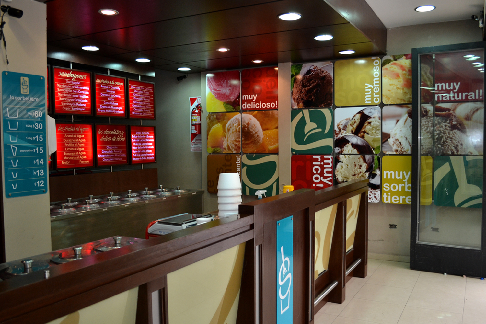

La sorbeteria chiquillo tiene sus inicios en 1979 con la mision de hacer el mejor sorbete artesanal de El Salvador, buscamos ser tradicionales asi tener un ambiente acogedor y brindar productos agradables al ciente. Nuestra variedad en sorbetes y algunos otros productos nos hacen una opcion muy confible al buscar pasar un buen momento con sus seres queridos, ademas nuestro ambiente es familiar ya que consideramos a nuetros clientes parte de nuestra familia
